5. sınıf
Oyunlar ve etkinlikler
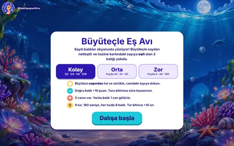
OyunBüyüteçle Eş AvıKesir, ondalık ve yüzde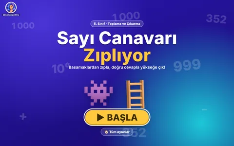
OyunSayı Canavarı ZıplıyorDoğal sayılarla toplama ve çıkarma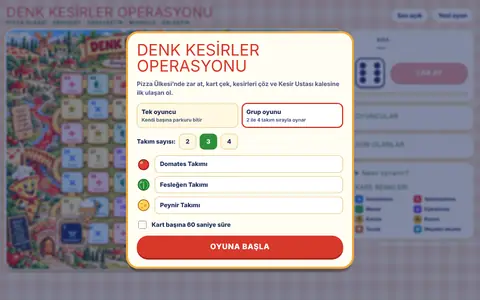
OyunDenk Kesirler OperasyonuDenk kesirler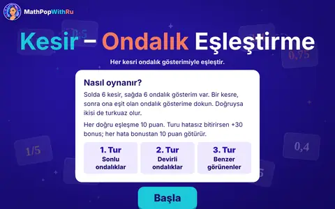
OyunKesir–Ondalık EşleştirmeKesir ve ondalık gösterim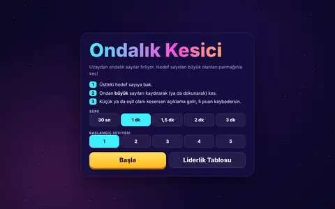
OyunOndalık KesiciOndalık sayıları karşılaştırma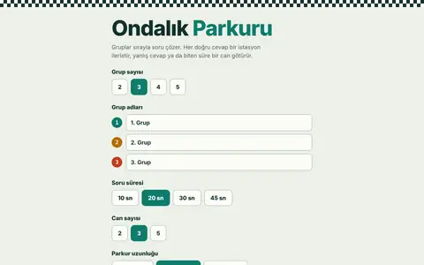
OyunOndalık ParkuruOndalık basamaklar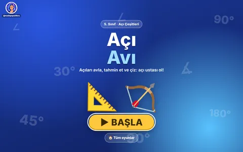
OyunAçı AvıAçı çeşitleri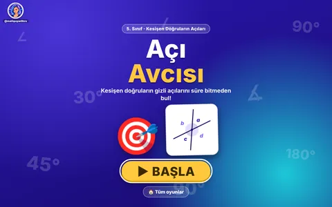
OyunAçı AvcısıKesişen doğruların açıları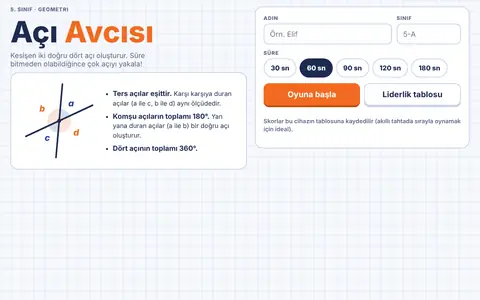
OyunAçı Avcısı (2. sürüm)Kesişen doğruların açıları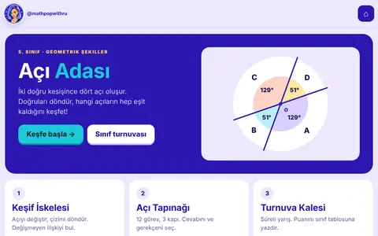
OyunAçı AdasıAçılar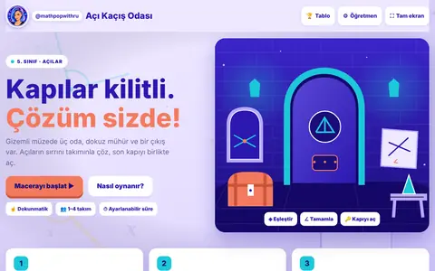
OyunAçı Kaçış OdasıAçılar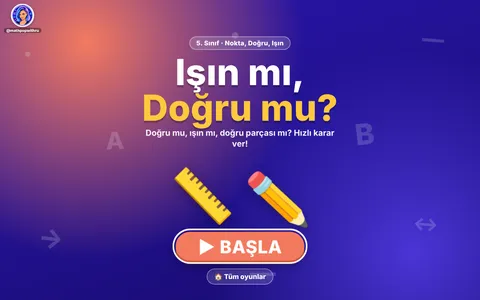
OyunIşın mı Doğru mu?Nokta, doğru, doğru parçası, ışın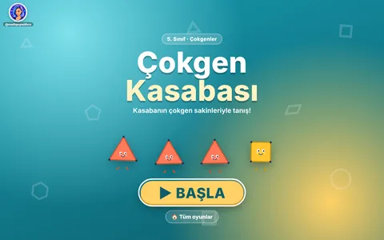
OyunÇokgen KasabasıÇokgenler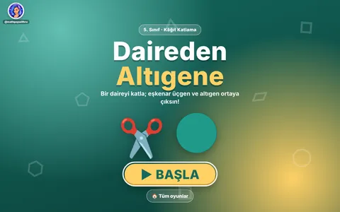
OyunDaireden AltıgeneGeometrik şekiller, kâğıt katlama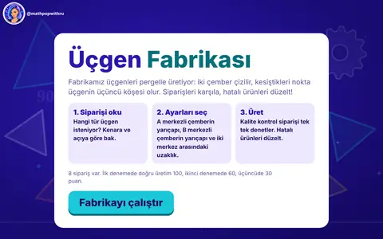
OyunÜçgen FabrikasıPergelle üçgen çizme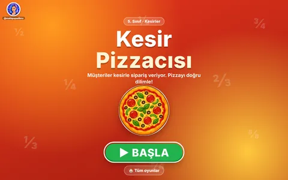
OyunKesir PizzacısıKesirle sipariş: pizzayı eşit dilimlere böl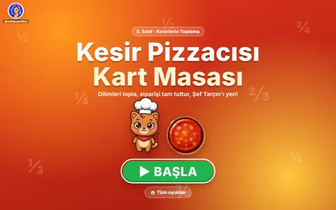
OyunKesir Pizzacısı Kart MasasıKesirlerle toplama, kart oyunu (tek kişi / sınıf takımları)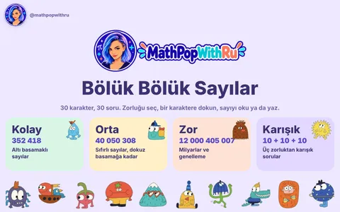
OyunBölük Bölük SayılarDoğal sayıları okuma ve yazma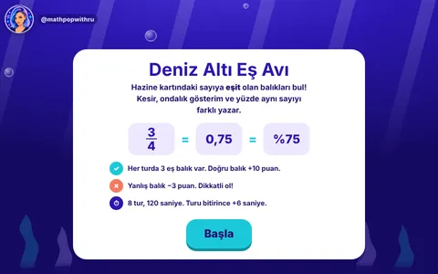
OyunDeniz Altı Eş AvıKesir, ondalık ve yüzde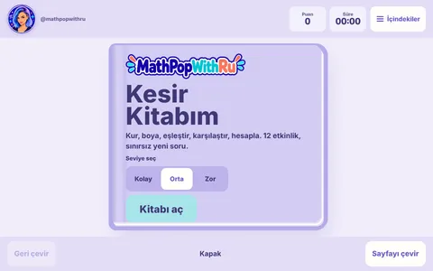
OyunKesir KitabımKesir modelleri, denk kesirler, karşılaştırmaÇalışma kağıtları
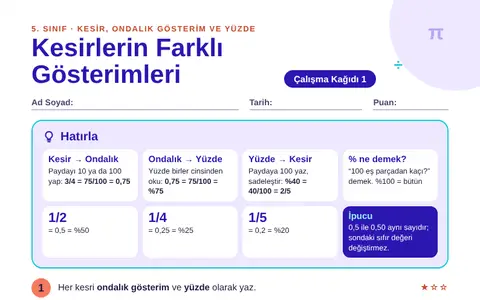
Çalışma kağıdıKesirlerin Farklı Gösterimleri 5. SınıfKesir, ondalık gösterim ve yüzde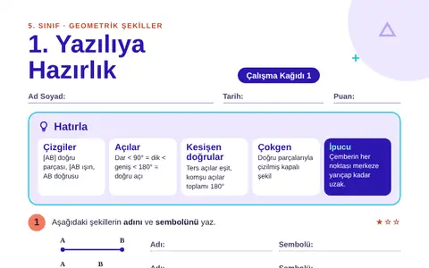
Çalışma kağıdı5. Sınıf 1. Yazılıya HazırlıkDoğru, açılar, çokgenler, üçgen (1. yazılı)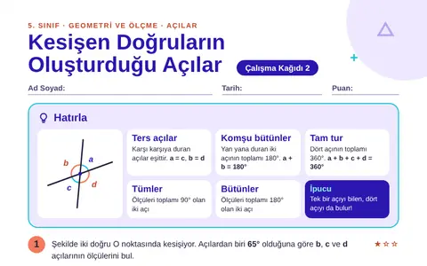
Çalışma kağıdıKesişen Doğruların Oluşturduğu Açılar 5. SınıfKesişen doğruların oluşturduğu açılar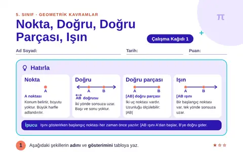
Çalışma kağıdıNokta, Doğru, Doğru Parçası, Işın 5. SınıfNokta, doğru, doğru parçası, ışın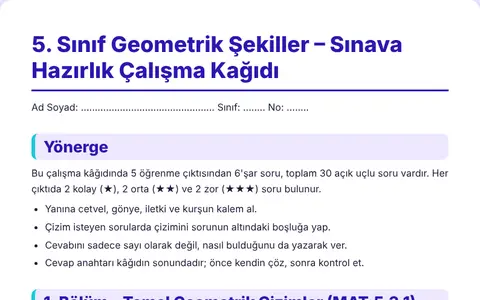
Çalışma kağıdı5. Sınıf Geometrik Şekiller – Sınava Hazırlık Çalışma KağıdıTemel geometrik çizimler, açılar, çokgenler (MAT.5.3.1–5.3.5)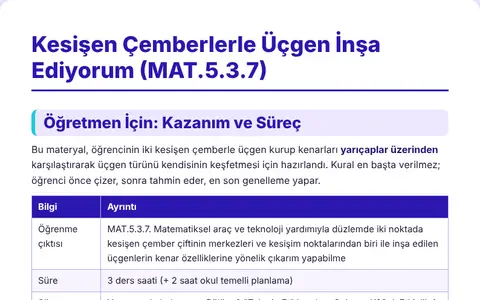
Çalışma kağıdıKesişen Çemberlerle Üçgen İnşa Ediyorum (MAT.5.3.7)Kesişen çemberlerle üçgen inşası (MAT.5.3.7)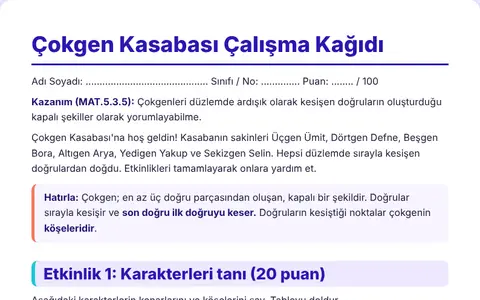
Çalışma kağıdıÇokgen Kasabası Çalışma KağıdıÇokgenler (MAT.5.3.5)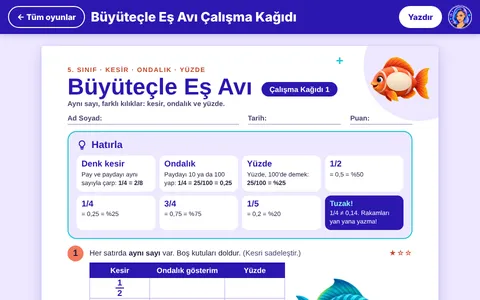
Çalışma kağıdıBüyüteçle Eş Avı Çalışma KağıdıKesir, ondalık gösterim ve yüzde6. sınıf
Oyunlar ve etkinlikler
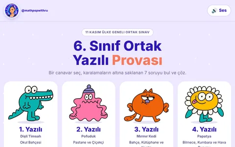
Oyun6. Sınıf Ortak Yazılı ProvasıÇarpan-kat, bölünebilme, asal çarpanlar, ortak kat-bölen, deneysel olasılık, ondalık gösterim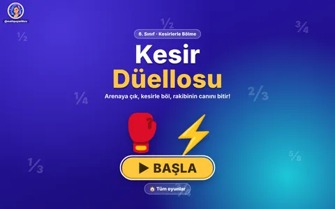
OyunKesir DüellosuKesirlerle bölme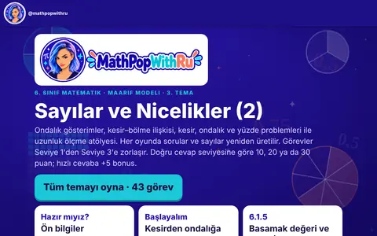
AtölyeKesir, Ondalık ve Yüzde AtölyesiKesir, ondalık ve yüzde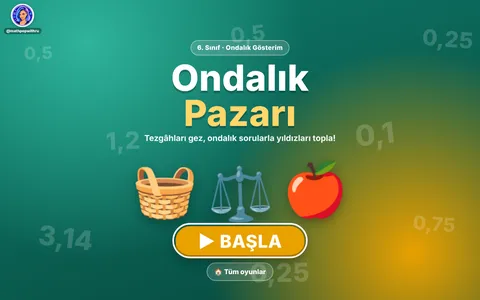
OyunOndalık PazarıOndalık gösterim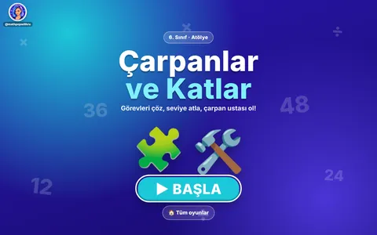
AtölyeÇarpanlar ve Katlar AtölyesiÇarpanlar ve katlar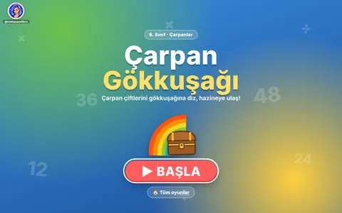
OyunÇarpan GökkuşağıÇarpanlar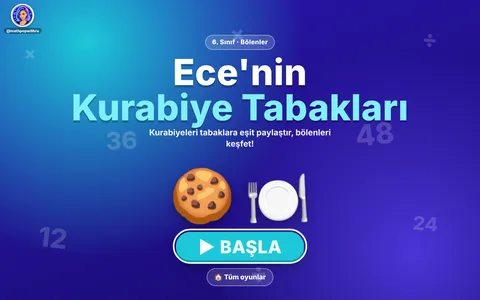
OyunEce'nin Kurabiye TabaklarıBölenler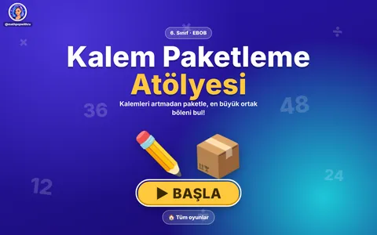
AtölyeKalem Paketleme AtölyesiEBOB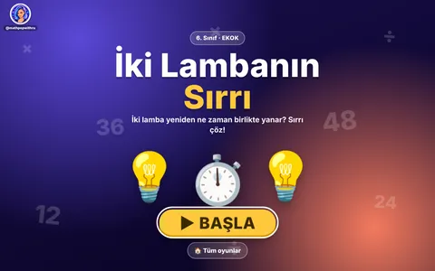
Oyunİki Lambanın SırrıEKOK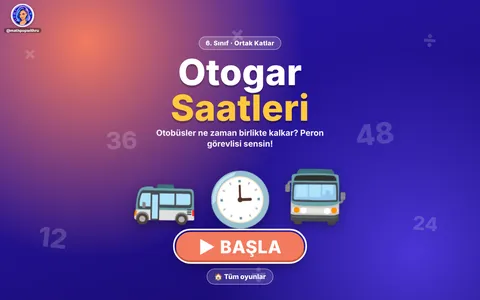
OyunOtogar SaatleriOrtak katlar problemleri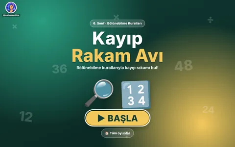
OyunKayıp Rakam AvıBölünebilme kuralları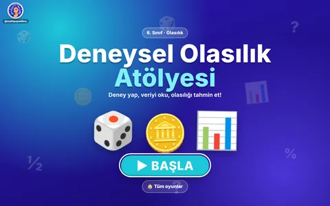
AtölyeDeneysel Olasılık AtölyesiOlasılık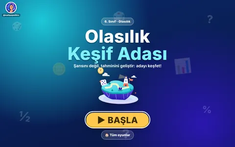
OyunOlasılık Keşif AdasıOlasılık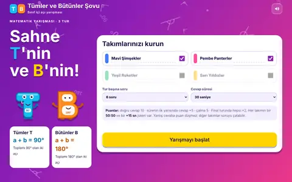
AtölyeTümler ve Bütünler ŞovuTümler ve bütünler açılarÇalışma kağıtları
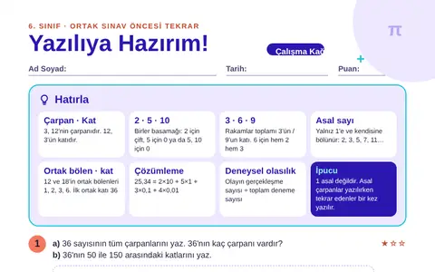
Çalışma kağıdı6. Sınıf Ortak Sınav HazırlıkÇarpan-kat, bölünebilme, asal çarpanlar, ondalık çözümleme, deneysel olasılık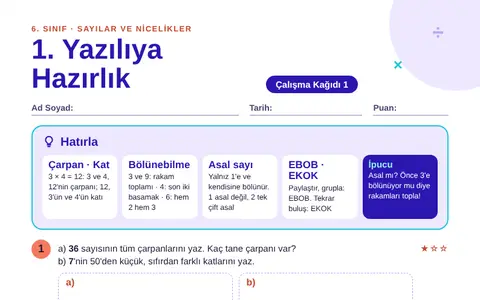
Çalışma kağıdı6. Sınıf 1. Yazılıya HazırlıkÇarpan-kat, bölünebilme, asal sayılar, EBOB-EKOK (1. yazılı)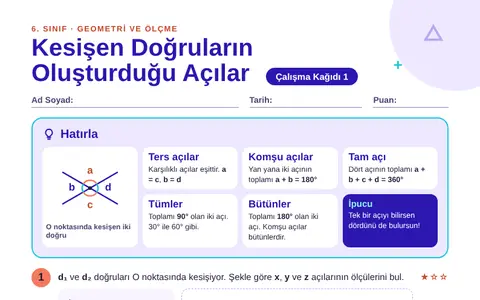
Çalışma kağıdıKesişen Doğruların Oluşturduğu Açılar 6. SınıfKesişen doğruların oluşturduğu açılar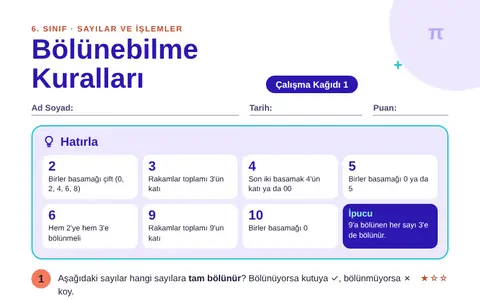
Çalışma kağıdıBölünebilme Kuralları 6. SınıfBölünebilme kuralları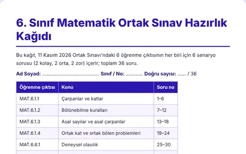
Çalışma kağıdı6. Sınıf Matematik Ortak Sınav Hazırlık KağıdıÇarpan-kat, bölünebilme, asal sayılar, ortak kat-bölen, deneysel olasılık, ondalık gösterim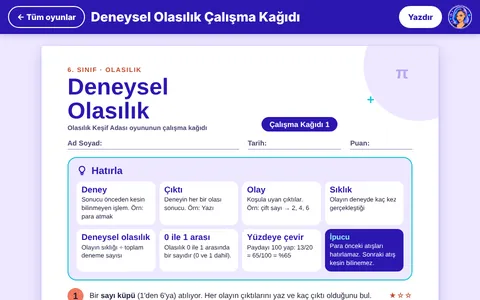
Çalışma kağıdıDeneysel Olasılık Çalışma KağıdıOlasılık Keşif Adası oyununun çalışma kağıdı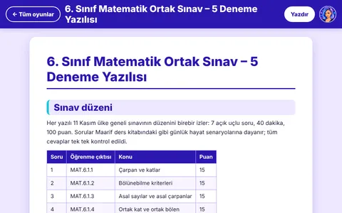
Yazılı sınav6. Sınıf Ortak Sınav – 5 Deneme YazılısıÇarpan-kat, bölünebilme, asal çarpanlar, ortak kat-bölen, olasılık, ondalık7. sınıf
Oyunlar ve etkinlikler
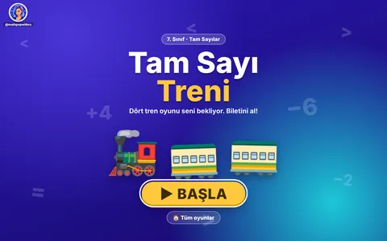
OyunTam Sayı TreniTam sayıları karşılaştırma (4 oyun) OyunSayı Doğrusu İstasyonuSayı doğrusunda tam sayılar Oyunİşaret TreniTam sayıları karşılaştırma OyunSıralama TreniKüçükten büyüğe sıralama OyunTers TrenBüyükten küçüğe sıralama OyunSayı CanavarlarıTam sayılar OyunKarabatak ile BalıkTam sayılarla çıkarma OyunKaranlık KaçışTam sayılar OyunTam Sayılar DüellosuTam sayılarla işlemler, 4 takım OyunTam Sayı ArenasıTam sayılarla işlemler OyunKutup Soğukları ve Sıcak PuanlarTam sayılarla çarpma AtölyeRasyonel Sayılar AtölyesiRasyonel sayılar Oyunİşlem CanavarlarıRasyonel sayılarla işlemler OyunKesir KaşifleriRasyonel sayılarda dört işlem OyunDevir AvcısıDevirli ondalık gösterim OyunSonlu mu, Devirli mi?Sonlu ve devirli ondalıklar OyunÜslü İfadeler LunaparkıÜslü ifadeler AtölyeVirgül Kaydırma Atölyesi10'un kuvvetleri AtölyeOnun Kuvvetleri AtölyesiÇözümleme, 10'un kuvvetleri OyunKüp Görünüm AvıYapıların farklı yönlerden görünümleri OyunBlok Görünüm AvıYapıların farklı yönlerden görünümleri (blok temalı)Çalışma kağıtları
Çalışma kağıdı7. Sınıf 1. Yazılıya HazırlıkRasyonel sayılar (1. yazılı)
Çalışma kağıdıTam Sayılarla İşlemlerTam sayılarla dört işlem
Çalışma kağıdıRasyonel Sayılarda İşlemlerRasyonel sayılarla dört işlem
Çalışma kağıdıÜslü İfadeler 7. SınıfÜslü ifadeler
Çalışma kağıdıKesir Kaşifleri Çalışma KâğıdıRasyonel sayılarla dört işlem
Çalışma kağıdı7. Sınıf Matematik – 1. Dönem 1. Ortak Yazılı Çalışma KağıdıRasyonel sayılar, dikdörtgenler prizması, istatistik; senaryo deneme sınavları
8. sınıf
Oyunlar ve etkinlikler
OyunKarekök CanavarlarıKareköklü ifadeler
OyunKarekök UstasıKareköklü ifadeler
OyunKarekök ZindanıKarekök tahmini
OyunKök Fabrikasıa√b biçiminde yazma
OyunKökünü Bul, Galaksiyi KurtarKareköklü ifadeler
Çalışma kağıtları
Çalışma kağıdı8. Sınıf 1. Yazılıya HazırlıkÇarpanlar, üslü ifadeler, kareköklü ifadeler (1. yazılı)
Çalışma kağıdıKarekök Ustası 8. SınıfKareköklü ifadeler
Çalışma kağıdı8. Sınıf Matematik Çalışma Kağıdı – Senaryo 6Çarpanlar, EBOB-EKOK, üslü ifadeler, bilimsel gösterim
Cevap anahtarı8. Sınıf Senaryo 6 – Ayrıntılı Cevap Anahtarı48 sorunun adım adım çözümü
Yazılı sınavBEP Matematik Yazılısı (4. Sınıf Düzeyi)Çarpma, katlar, basamak değeri
Yazılı sınavBEP Matematik Yazılısı (6. Sınıf Düzeyi)Üslü ifadeler, bölünebilme, EBOB-EKOK, ondalık